rmgpy.kinetics — Kinetics Models¶
This module contains classes and methods for working with kinetics models. All such models derive from the KineticsModel base class:
- Arrhenius - A kinetics model based on the modified Arrhenius equation
- ArrheniusEP - A kinetics model based on the modified Arrhenius equation with Evans-Polanyi correction to the activation energy
- MultiKinetics - A kinetics model based on a summation of several other kinetics expressions
- ThirdBody - A pressure-dependent kinetics model based on the modified Arrhenius equation, but with an additional factor for the third body concentration
- Lindemann - A pressure-dependent kinetics model based on the Lindemann equation
- Troe - A pressure-dependent kinetics model based on the Lindemann equation with improved Troe falloff factor
- PDepArrhenius - A pressure-dependent kinetics model based on a set of modified Arrhenius equations at various pressures, which are then interpolated between on a logarithmic pressure scale
- Chebyshev - A pressure-dependent kinetics model using an array of Chebyshev polynomials in inverse temperature and logarithmic pressure
Base Class for Kinetics Models¶
- class rmgpy.kinetics.KineticsError¶
An exception to be raised when an error occurs while working with kinetics models and data. Pass a string describing the circumstances of the exceptional behavior.
- class rmgpy.kinetics.KineticsModel¶
A base class for kinetics models, containing several attributes common to all models:
Attribute Type Description Tmin Quantity The minimum absolute temperature in K at which the model is valid Tmax Quantity The maximum absolute temperature in K at which the model is valid Pmin Quantity The minimum absolute pressure in Pa at which the model is valid Pmax Quantity The maximum absolute pressure in Pa at which the model is valid comment str A string containing information about the model (e.g. its source) - getRateCoefficients()¶
Return the rate coefficients k(T) in SI units at temperatures Tlist in K.
- isIdenticalTo()¶
Returns True if Tmin, Tmax, Pmin, Pmax for both objects match. Otherwise returns False
- isPressureDependent()¶
Return True if the kinetics are pressure-dependent or False if they are pressure-independent. This method must be overloaded in the derived class.
- isPressureValid()¶
Return True if the pressure P in Pa is within the valid pressure range of the kinetic data, or False if not. If the minimum and maximum pressure are not defined, True is returned.
- isSimilarTo()¶
Returns True if rates of reaction at temperatures 500,1000,1500,2000 K and 1 and 10 bar are within +/ .3 for log(k), in other words, within a factor of 2.
- isTemperatureValid()¶
Return True if the temperature T in K is within the valid temperature range of the kinetic data, or False if not. If the minimum and maximum temperature are not defined, True is returned.
- toHTML()¶
Return an HTML rendering.
- toPrettyRepr()¶
Return a string representation that can be used to reconstruct the KineticsModel object.
Pressure-Independent Kinetics Models¶
- class rmgpy.kinetics.KineticsData¶
A kinetics model based around a set of discrete (high-pressure limit) rate coefficients at various temperatures. The attributes are:
Attribute Type Description Tdata Quantity The temperatures at which the heat capacity data is provided kdata Quantity The rate coefficients in SI units at each temperature in Tdata - getRateCoefficient()¶
Return the rate coefficient k(T) in SI units at temperature T in K.
- isIdenticalTo()¶
Returns True if the kdata and Tdata match. Returns False otherwise.
- isPressureDependent()¶
Returns False since KineticsData kinetics are not pressure-dependent.
- toHTML()¶
Return an HTML rendering.
- toPrettyRepr()¶
Return a string representation of the reference that can be used to reconstruct the object.
- class rmgpy.kinetics.Arrhenius¶
Represent a set of modified Arrhenius kinetics. The kinetic expression has the form
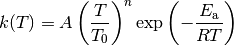
where
 ,
,  , 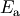, and 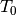 are the
parameters to be set,
, 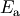, and 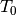 are the
parameters to be set,  is absolute temperature, and
is absolute temperature, and  is
the gas law constant. The attributes are:
is
the gas law constant. The attributes are:Attribute Type Description A Quantity The preexponential factor in s^-1, m^3/mol*s, etc. T0 Quantity The reference temperature in K n Quantity The temperature exponent Ea Quantity The activation energy in J/mol - changeT0()¶
Changes the reference temperature used in the exponent to T0 in K, and adjusts the preexponential accordingly.
- fitToData()¶
Fit the Arrhenius parameters to a set of rate coefficient data klist in units of kunits corresponding to a set of temperatures Tlist in K. A linear least-squares fit is used, which guarantees that the resulting parameters provide the best possible approximation to the data.
- getRateCoefficient()¶
Return the rate coefficient k(T) in SI units at temperature T in K.
- isIdenticalTo()¶
Returns True if kinetics matches that of another kinetics model. Must match temperature and pressure range of kinetics model, as well as parameters: A, n, Ea, T0. (Shouldn’t have pressure range if it’s Arrhenius.) Otherwise returns False.
- isPressureDependent()¶
Returns False since Arrhenius kinetics are not pressure-dependent.
- toPrettyRepr()¶
Return a string representation of the reference that can be used to reconstruct the object.
- class rmgpy.kinetics.ArrheniusEP¶
Represent a set of modified Arrhenius kinetics with Evans-Polanyi data. The kinetic expression has the form
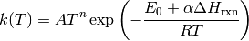
The attributes are:
Attribute Type Description A Quantity The preexponential factor in s^-1, m^3/mol*s, etc. n Quantity The temperature exponent E0 Quantity The activation energy at zero enthalpy of reaction in J/mol alpha Quantity The linear dependence of activation energy on enthalpy of reaction - getActivationEnergy()¶
Return the activation energy in J/mol using the enthalpy of reaction dHrxn in J/mol.
- getRateCoefficient()¶
Return the rate coefficient k(T, P) in SI units at a temperature T in K for a reaction having an enthalpy of reaction dHrxn in J/mol.
- isIdenticalTo()¶
Returns True if kinetics matches that of another kinetics model. Must match temperature range of kinetics model, as well as parameters: A, n, alpha, E0. (Shouldn’t have pressure range if it’s ArrheniusEP.) Otherwise returns False
- isPressureDependent()¶
Returns False since ArrheniusEP kinetics are not pressure-dependent.
- toArrhenius()¶
Return an Arrhenius object corresponding to this object by using the provided enthalpy of reaction dHrxn in J/mol to calculate the activation energy.
- toPrettyRepr()¶
Return a string representation of the reference that can be used to reconstruct the object.
Pressure-Dependent Kinetics Models¶
Single-Well Models¶
- class rmgpy.kinetics.ThirdBody¶
A kinetic model of a phenomenological rate coefficient k(T, P) using the expression
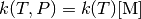
where 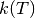 is an Arrhenius expression and 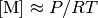 is the concentration of the third body (i.e. the bath gas). A collision efficiency can be used to further correct the value of
 .
.The attributes are:
Attribute Type Description arrheniusLow Arrhenius The low-pressure limit Arrhenius kinetics efficiencies dict A mapping of species to collider efficiencies - getColliderEfficiency()¶
Return the collider efficiency for the specified collider, which can take one of two forms:
- A single collider species. If the collider exists in the in the set of efficiencies, its efficiency will be returned. If not, an efficiency of unity will be returned.
- A dict mapping collider species to mole fractions. The overall efficiency will be a weighted sum of the efficiencies of the collider species, using the mole fractions as the weights. Collider species not present in the set of efficiencies will be assumed to have an efficiency of unity.
If collider is None or otherwise invalid, an efficiency of unity will be returned.
- getRateCoefficient()¶
Return the rate constant k(T, P) in SI units at a temperature T in K and pressure P in Pa by evaluating the third-body expression. If a collider is specified the rate coefficient will be modified accordingly.
- isIdenticalTo()¶
Return True if arrheniusLow and efficiences match that of other Kinetics model. Otherwise return False.
- isPressureDependent()¶
Returns True since third-body kinetics are pressure-dependent.
- toPrettyRepr()¶
Return a string representation of the reference that can be used to reconstruct the object.
- class rmgpy.kinetics.Lindemann¶
A kinetic model of a phenomenological rate coefficient k(T, P) using the expression
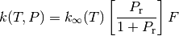
where
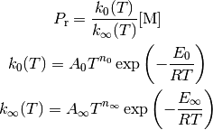
and is the concentration of the bath gas. The Arrhenius expressions 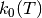 and 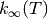 represent the low-pressure and high-pressure limit kinetics, respectively. The former is necessarily one reaction order higher than the latter. For the Lindemann model, 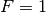. A collision efficiency can be used to further correct the value of
.The attributes are:
Attribute Type Description arrheniusLow Arrhenius The Arrhenius kinetics at the low-pressure limit arrheniusHigh Arrhenius The Arrhenius kinetics at the high-pressure limit efficiencies dict A mapping of species to collider efficiencies - getRateCoefficient()¶
Return the rate constant k(T, P) in SI units at a temperature T in K and pressure P in Pa by evaluating the Lindemann expression. If a collider is specified the rate coefficient will be modified accordingly.
- isIdenticalTo()¶
Return True if all parameters matches that of other kinetics
- toPrettyRepr()¶
Return a string representation of the reference that can be used to reconstruct the object.
- class rmgpy.kinetics.Troe¶
A kinetic model of a phenomenological rate coefficient k(T, P) using the expression
where
and is the concentration of the bath gas. The Arrhenius expressions and represent the low-pressure and high-pressure limit kinetics, respectively. The former is necessarily one reaction order higher than the latter. A collision efficiency can be used to further correct the value of
.For the Troe model the parameter 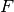 is computed via
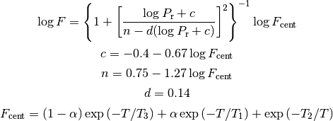
The attributes are:
Attribute Type Description arrheniusLow Arrhenius The Arrhenius kinetics at the low-pressure limit arrheniusHigh Arrhenius The Arrhenius kinetics at the high-pressure limit efficiencies dict A mapping of species to collider efficiencies alpha Quantity The 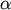 parameter T1 Quantity The 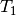 parameter T2 Quantity The 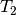 parameter T3 Quantity The 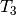 parameter - getRateCoefficient()¶
Return the rate constant k(T, P) in SI units at a temperature T in K and pressure P in Pa by evaluating the Lindemann expression. If a collider is specified the rate coefficient will be modified accordingly.
- isIdenticalTo()¶
Return True if all parameters are identical to that of otherKinetics. Otherwise return False.
- toPrettyRepr()¶
Return a string representation of the reference that can be used to reconstruct the object.
- class rmgpy.kinetics.PDepArrhenius¶
A kinetic model of a phenomenological rate coefficient k(T, P) using the expression
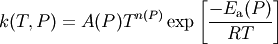
where the modified Arrhenius parameters are stored at a variety of pressures and interpolated between on a logarithmic scale. The attributes are:
Attribute Type Description pressures list The list of pressures in Pa arrhenius list The list of Arrhenius objects at each pressure highPlimit Arrhenius The high (infinite) pressure limiting Arrhenius expression Note that highPlimit is not used in evaluating k(T,P).
- fitToData()¶
Fit the pressure-dependent Arrhenius model to a matrix of rate coefficient data K with units of kunits corresponding to a set of temperatures Tlist in K and pressures Plist in Pa. An Arrhenius model is fit at each pressure.
- getRateCoefficient()¶
Return the rate constant k(T, P) in SI units at a temperature T in K and pressure P in Pa by evaluating the pressure- dependent Arrhenius expression.
If k(P+) and k(P-) (the values either side of the P requested) are zero, then zero is returned. If only k(P-)==0 then it is replaced with k(P+)/1e10, and vice versa. This allows the logarithmic interpolation to procede without zero-division errors. (The expression is not defined when one of them is zero and the other is not, so we have to assume something.)
- isIdenticalTo()¶
Returns True if kinetics matches that of another kinetics model. Must match pressures, arrhenius list, and highPlimit. Otherwise returns False
- isPressureDependent()¶
Returns True since PDepArrhenius kinetics are pressure-dependent.
- isValid()¶
Returns True if model has same number of arrhenius objects as pressures and if neither are empty. Otherwise returns False
- toPrettyRepr()¶
Return a string representation of the reference that can be used to reconstruct the object.
Multi-Well Models¶
- class rmgpy.kinetics.Chebyshev¶
A kinetic model of a phenomenological rate coefficient k(T, P) using the expression
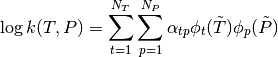
where 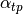 is a constant, 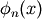 is the Chebyshev polynomial of degree
evaluated at  , and
, and
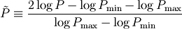
are reduced temperature and reduced pressures designed to map the ranges
 and
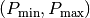 to 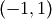.
The attributes are:
and
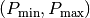 to 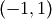.
The attributes are:Attribute Type Description coeffs list Matrix of Chebyshev coefficients kunits str The units of the generated k(T, P) values degreeT int The number of terms in the inverse temperature direction degreeP int The number of terms in the log pressure direction - fitToData()¶
Fit a Chebyshev kinetic model to a set of rate coefficients K, which is a matrix corresponding to the temperatures Tlist in K and pressures Plist in Pa. degreeT and degreeP are the degree of the polynomials in temperature and pressure, while Tmin, Tmax, Pmin, and Pmax set the edges of the valid temperature and pressure ranges in K and Pa, respectively.
- getRateCoefficient()¶
Return the rate constant k(T, P) in SI units at a temperature T in K and pressure P in Pa by evaluating the Chebyshev expression.
- isIdenticalTo()¶
Checks to see if kinetics matches that of other kinetics and returns True if coeffs, kunits, Tmin,
- isPressureDependent()¶
Returns True since Chebyshev polynomial kinetics are pressure-dependent.
- toPrettyRepr()¶
Return a string representation of the reference that can be used to reconstruct the object.
Other Kinetics Models¶
- class rmgpy.kinetics.MultiKinetics¶
Represent a rate coefficient as multiple sets of kinetics expressions
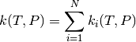
The attributes are:
Attribute Type Description kineticsList list A list of the KineticsModel objects that sum to represent the kinetics - getRateCoefficient()¶
Return the rate coefficient k(T) in SI units at temperature T in K.
- isIdenticalTo()¶
Returns True if kinetics matches that of another kinetics model. Each duplicate reaction must be matched and equal to that in the other MultiKinetics model in the same order. Otherwise returns False
- isPressureDependent()¶
Returns True if any of the multiple kinetics expressions are pressure-dependent.
- toPrettyRepr()¶
Return a string representation of the reference that can be used to reconstruct the object.
Table Of Contents
Previous topic
rmgpy.chemkin — Writing Chemkin Output
Next topic
rmgpy.quantity — Physical Quantities and Constants